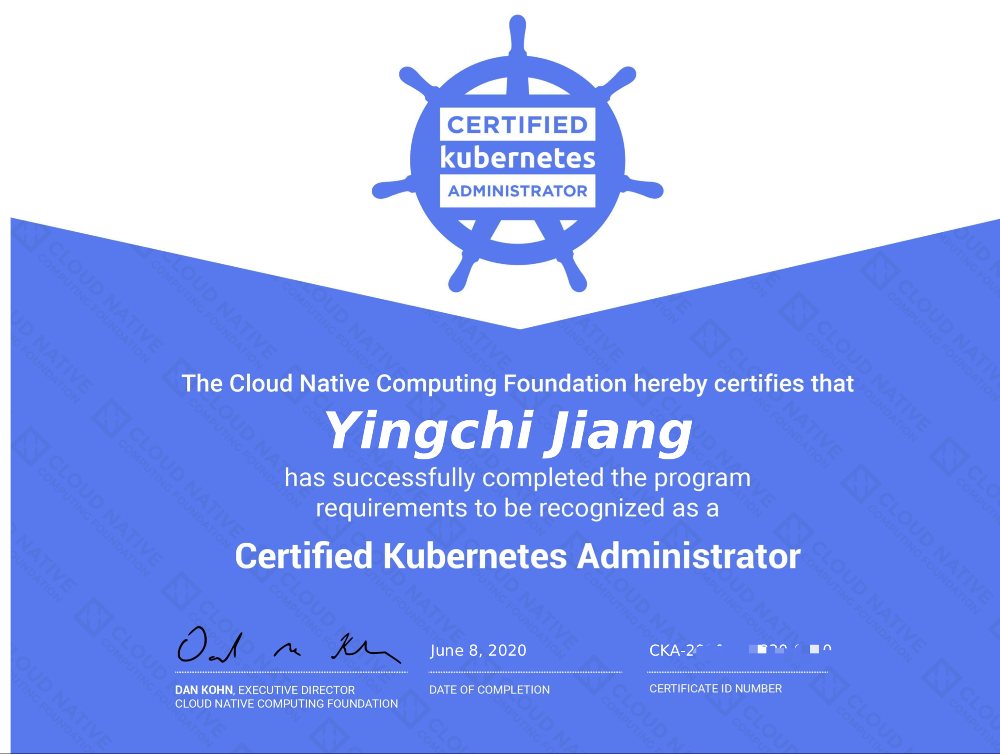

CKA (Certified Kubernetes Administrator)认证是由 CNCF 与 Linux Foundation 管理的与 Kubernetes 运维技能相关的一个认证，目前业内对于云原生这一块儿专门的认证还是比较少的。自己目前所做的大部分工作都与 Kubernetes 关系比较密切，因此就报名预约了 6 月份的认证，好好准备一段时间，最后成功通过了认证（证书详见文末）
考试大纲
CNCF 官网中找到 CKA 认证考试页面 https://www.cncf.io/certification/cka/ 可以看到基本的考试大纲，分值分配情况。
The online exam consists of a set of performance-based items (problems) to be solved in a command line and candidates have 3 hours to complete the tasks.
The Certification focuses on the skills required to be a successful Kubernetes Administrator in industry today. This includes these general domains and their weights on the exam:
- Application Lifecycle Management 8%
- Installation, Configuration & Validation 12%
- Core Concepts 19%
- Networking 11%
- Scheduling 5%
- Security 12%
- Cluster Maintenance 11%
- Logging / Monitoring 5%
- Storage 7%
- Troubleshooting 10%
可以看到考察的项目还是比较繁杂的，但是没办法，Kubernetes 本身就不是一个小框架，毕竟是 Google 这么多年来的积累精华，因此考察这些内容也是可以理解的。
前期准备
准备时间我大概用了两个星期，两个星期的时间除了最后几天集中精力练习了一段时间，其它时候都是随缘练习… 这也导致最后认证的时候过于自信了，比预计的分数少了十几分…我现在都不知道究竟错在哪里了，当时感觉除了有个 8 分 Troubleshooting 的没做好，其它都是 OK 的…
整个准备过程的话主要分为几个部分：
- Kubernetes 架构；
- Kubernetes 核心资源概念；
- 集群环境下训练；
Kubernetes 架构，这一块儿的话主要是看书、看视频，这里推荐华为云官方做的一个培训视频，对于 Kubernetes 架构这一块儿的话讲的还是蛮清楚的。对于架构这一块的学习或者说是复习，主要针对的倒不是考纲中前面这些部分，主要是针对 Troubleshooting 这一部分，如果你对整体架构，或者说工作原理不是很清楚的话，一旦其中一个组件出了问题，很难准确定位到错误。我听说2020年9月之后 CKA 认证考试大纲会有变动，Troubleshooting 部分分值比例会调高，所以打算之后进行 CKA 认证的朋友一定要注意这一块儿，不要老是在那里调 YAML 清单…。所以，前期的话我主要是在 Kubernetes 架构这块儿进行了一段时间的深入学习，虽然那道 Troubleshooting 还是没做出来，但是我并不觉得这思路有啥问题~
Kubernetes 核心资源概念，这个就不用说了吧，重中之重，这块儿的核心说白了就是两个部分，一个是 kubectl 的使用，另一个是 YAML 清单的配置，这一块儿的关键是文档。值得一提的是，CKA 认证考试过程中允许查阅官方文档，也就是说允许考试页面 Tab 外再开一个 Kubernetes Docs 页面，所以有些东西是可以查到复制过来的，这也是我觉得这个认证很接地气的一点，毕竟平时也是这么干的，文档是给人查的，不是用来背的，不是吗？但是，我并不推荐做一个题查一个文档，你要知道考试时长2小时，然后要做25道题，平均几分钟就要搞定一道，遇到复杂的题目你还得琢磨一下，所以时间还是有限制的，别太依赖文档，这也是我要说的第三部分；
集群环境下训练，这部分的重要性不言而喻，前面两部分都是铺垫，无论是熟悉架构还是熟悉概念，真正实操不行的话，其它都免谈… 很简单的例子，如果说 pv，pvc，secret，configMap 之类的概念，很多人不屑一顾，但是真正让他去从头配置一个，并且通过挂载的方式或者环境变量的方式关联到应用，有些人磨磨唧唧半天整不好，熟练的朋友三下五除二搞定，这个问题在这种题目繁多的认证考试中显得尤为突出。CKA 认证考试毕竟是个完全上机的认证考试，不是背背题库就能解决的，因此考试前一定要在集群环境下进行大量的训练。因为我实验室里有自己配的一台 DELL 服务器，上面 ESXi 分了三个 Node 跑了一个三节点的 Kubernetes 集群，所以这一块儿还是蛮方便的。如果真的搞不起来集群的（真的有特殊原因，否则集群配置是 CKA 的考察项目之一，需要掌握），可以在 Kubernetes 官网上的 Trainning Courses 上用他们的 Minikube 来当做训练环境，但是也不是很方便，一方面网络原因，一方面他们会在空闲时进行资源的回收，所以适合一些一次性的快速练习。
报名及考试
认证考试报名，这个直接去 CNCF 的相关页面报名即可，在 CNCF 官网的导航栏“Certification”项目里找到“CKA”点进去就是，也可以直接进这个链接：https://www.cncf.io/certification/cka/，报名的话目前是2088元，前一阵子有优惠，我报名的时候花了1400元，你想白嫖是不可能的~ 报名成功后会给你个考试码，之后你就根据考试流程管理页面的步骤提示一步一步往下走就可以了。对了，需要绑定一个16位号的银行卡，其它位数的不可以，虽然没啥用，但是不绑还不行，没法申请考试。
预约考试，这个时候要根据提示进一个叫做 PSI 的考试系统，里面可以进行考试的 Sheduling，也就是预约考试时间，你先确定一个大体的时间，系统给你返回这段时间附近可用的预约时间，预约之后就会有天数时间倒计时，准备考试就可以了。
准备开考，线上考试当天，提前十几分钟就显示可以进入考试页面，点进去之后，首先是常规项目的检查，以及操作提示，然后右下角有个聊天框，考试官会要求你端着电脑通过摄像头观察周围环境，观察位置左右，观察桌面，观察有无佩戴手表…，包括很重要的，检查你的证件，我是拿了身份证还有港澳通行证，因为听之前考试的朋友说他们需要一个带有英文名的正规证件…所以护照啥的都可以，总之这个检查过程比较繁杂，考试官事儿还不少，要有耐心，还有一点，聊天全英文，注意，考试题目是可以中英文切换的，但是考试官是说英文的，这一点懒得吐槽了，当时还是预约的所谓中文面试官…但是还好自己英语水平还可以，交流没啥障碍，如果英文不好的朋友这一点还是要注意的，如果有什么问题要问考试官也是通过这个聊天框。考试页面的话左边是题目和提示，题目下方有题号的导航，可以标记不会做的题，有时间导航回来做，这个是允许的，有的朋友喜欢浏览一遍题目跳着做，这个看个人喜好，但是注意不要漏题目，一定要做好标记。然后屏幕上有个可以活动的 Notepad，可以用来复制粘贴过程中暂存一些内容修改修改，如果 Vim 操作熟练的话就忽略这个，我虽然 Vim 不是贼6那种，但是这个 Notepad 没咋用，我觉得用处不是很大。然后右边主要的区域就是一个 Terminal，上方还有个重连按钮，网络原因，Terminal 老是断开，点一下重连就没问题了，操作不会丢失，这个放心，对于 Terminal 的复制粘贴操作，因为我是用的 Mac OS，所以没啥影响，command C/V 正常使用，Windows 下的朋友注意一下可能需要“终端复制/粘贴”操作，而不是普通的复制粘贴。
考试环节，当考试官提示你可以开考后，Terminal 会自动打开，然后页面左上方会有一个条状的计时，当然也可以看自己电脑的时间。考试过程中房间不能有别人进进出出，不能老是摇晃头，不能说话，这个是常识。如果你要去卫生间，要跟面试官申请，他同意后你可以暂时离开，但是别时间太久，这个过程中考试不会暂停。如果网络中断或一些因素导致考试中断，可以自己重新进考试页面，跟考试官说明情况，但是如果老是这么中断的话，估计就不让你考了…
指南 & 技巧
- 选一个好用的科学上网工具，这个很关键，否则报名或考试流程会很难受，而且 Kubernetes 官方文档也是部署在境外服务器；
- 关于备考方面，强烈推荐 CSDN 上一个博主的总结，很详细，很有帮助：https://blog.csdn.net/fly910905/article/details/102966474，我建议把这个系列的文章全部过一遍，练习一遍，考试时一点不慌，考察的点基本上都包含了；
- 官方文档最佳用法是直接分类放进收藏夹里，这个是允许的，可以按照你的思路进行一个归类，到时候真的需要查的时候直接在收藏夹里翻找一下即可，不要每次都是在 Docs 页面 Search，那样很浪费时间；
- 官方文档有个很有帮助的页面叫做 Kubectl Cheat Sheet，https://kubernetes.io/docs/reference/kubectl/cheatsheet/，这里面列出了各种常用的命令，挺方便的，可以熟悉几遍然后收藏起来；
- 熟练利用 Linux 的
alias命令进行一些快捷配置，比如最基本的，把kubectl换成k，爽多了；
最后附上自己的证书，也祝各位朋友顺利！
